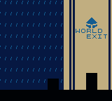
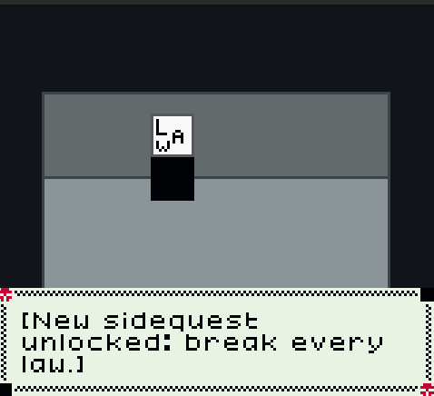

Behold- The GREATEST Dhilly Game adventure yet!
After many years of work from 2021 to 2025, Dhilly Game 6 (Remake) is the ULTIMATE Dhilly Game, which continues right where Dhilly Game 5 left off!
With new and improved content!
While you may have played Dhilly Game 6 (Original), this NEW game features:
- New characters
- Major bug fixes
- New and improved graphics
- Non-color Game Boy compatibility
- Super Game Boy compatibility and enhancements for SNES
- Easier gameplay
- New areas
- Fun side quests
- The same story you love!

Do you like crime?
In this new and unique game mode, you must break ALL of Dhilly's laws to win!
OK, let's play!
Since this is a Game Boy game, you'll need an emulator to play it- No worries! You can play the game right from your browser, complete with mobile controls!
If you do want to get more technical, you can also download the ROM to enjoy on your own emulators and even on a real Game Boy!
Itch.io (Play online, download, donate)
GitHub (Source Code)